Fósiles de Hominidos Destacados
Esta lista incluye fósiles que son importantes por su interés científico o histórico, o porque son frecuentemente mencionados por los defensores del creacionismo. A veces se lee que todos los fósiles de homínidos cabrían en un ataúd, o sobre una mesa, o una mesa de billar. Esa es una imagen engañosa, ya que ahora existen miles de fósiles de homínidos. Sin embargo, la mayoría son fragmentarios, a menudo consistiendo en huesos individuales o dientes aislados. Los cráneos y esqueletos completos son raros.
La lista está ordenada por especie, desde las más antiguas hasta las más recientes. Dentro de cada especie, los hallazgos están ordenados según el orden de su descubrimiento. Cada especie tiene un tipo que se utilizó para definirla.
Cada entrada consistirá en un número de espécimen si se conoce (o el nombre del sitio, si se encontraron muchos fósiles en un mismo lugar), cualquier apodo entre comillas y un nombre de especie. El nombre de la especie será seguido de un '?' si es dudoso. Si el fósil fue originalmente colocado en una especie diferente, también se dará ese nombre.
Se utiliza la siguiente terminología. Un cráneo se refiere a todos los huesos de la cabeza. Un caláneo es un cráneo menos la mandíbula inferior. Una caja craneal es el caláneo menos la cara y la mandíbula superior. Una calota craneal es la porción superior de la caja craneal.
Abbreviations: ER East (Lake) Rudolf, Kenya WT West (Lake) Turkana, Kenya KP Kanapoi, Kenya SK Swartkrans, South Africa Sts,Stw Sterkfontein, South Africa TM Transvaal Museum, South Africa OH Olduvai Hominid, Tanzania AL Afar Locality, Ethiopia ARA-VP Aramis Vertebrate Paleontology, Ethiopia BOU-VP Bouri Vertebrate Paleontology, Ethiopia TM Toros-Menalla, Chad
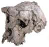
Descubierto por Ahounta Djimdoumalbaye en 2001 en el Chad, en el desierto del Sahara meridional. La edad estimada es entre 6 y 7 millones de años. Este es un cráneo mayormente completo con un cerebro pequeño (entre 320 y 380 cc). (Brunet et al. 2002, Wood 2002) Presenta muchas características primitivas similares a las de los simios, como el tamaño pequeño del cerebro, junto con otras, como las crestas supraorbitales y los caninos pequeños, que son características de los homínidos posteriores.
"ARA-VP, Sitios 1, 6 y 7", Ardipithecus ramidus
Descubiertos por un equipo dirigido por Tim White, Berhane Asfaw y Gen Suwa (1994) en 1992 y 1993 en Aramis, Etiopía. La edad estimada es de 4,4 millones de años. El hallazgo consistió en fósiles de 17 individuos. La mayoría de los restos son dientes, pero también hay una mandíbula inferior parcial de un niño, una base craneal parcial y un hueso de brazo parcial de 2 individuos.
ARA-VP-6/1 consiste en 10 dientes de un solo individuo.
ARA-VP-7/2 consiste en partes de los tres huesos del brazo izquierdo de un solo individuo, con una mezcla de características de homínido y de simio.
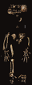
Descubierta por un equipo dirigido por Tim White en 1994 en Aramis, en Etiopía (White et al. 2009; Gibbons 2009). Su edad es de aproximadamente 4,4 millones de años. Ardi es un fósil espectacularmente completo. Se encontró aproximadamente el 45% de su esqueleto, incluyendo la mayor parte del cráneo, la pelvis, las manos y los pies, y muchos huesos de las extremidades.
Tenía aproximadamente 120 cm (3'11") de altura y pesaba aproximadamente 50 kg (110 lbs).
KP 271, "Hominido de Kanapoi", Australopithecus
anamensis
Descubierto por Bryan Patterson en 1965 en Kanapoi, en
Kenia (Patterson y Howells 1967). Se trata de un húmero izquierdo inferior que tiene
unos 4,0 millones de años. (Argumentos creacionistas)
KP 29281, Australopithecus anamensis
Descubierto por Peter Nzube en 1994 en Kanapoi, Kenia (Leakey et al. 1995). Se trata de una mandíbula inferior con todos sus dientes que tiene aproximadamente 4,0 millones de años.
KP 29285, Australopithecus anamensis
Descubierto por Kamoya Kimeu en 1994 en Kanapoi, Kenia. Se trata de una tibia, faltando la porción central del hueso, que tiene aproximadamente 4,1 millones de años. Es la evidencia más antigua conocida de la bipedestación homínida.
AL 129-1, Australopithecus afarensis
Descubierto por Donald Johanson en 1973 en Hadar, Etiopía (Johanson y Edey 1981; Johanson y Taieb 1976). La edad estimada es de aproximadamente 3,4 millones de años. Este hallazgo consistió en porciones de ambas piernas, incluyendo una rodilla derecha completa que es casi un miniaturizado de una rodilla humana, pero que aparentemente pertenece a un adulto.
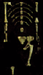
Descubierta por Donald Johanson y Tom Gray en 1974 en Hadar, en
Etiopía (Johanson y Edey 1981; Johanson y Taieb 1976). Su
edad es de aproximadamente 3,2 millones de años. Lucy era una
hembra adulta de unos 25 años. Se encontró aproximadamente el 40%
de su esqueleto, y su pelvis, fémur (el hueso de la pierna
superior) y tibia muestran que era bípeda. Tenía una altura de
aproximadamente 107 cm (3'6") (pequeña para su especie) y pesaba
aproximadamente 28 kg (62 lbs). (Argumentos creacionistas)
Sitio AL 333, "La Primera Familia",
Australopithecus afarensis?
Descubierto en 1975 por el equipo de Donald Johanson en Hadar, Etiopía
(Johanson y Edey 1981). Su edad es de aproximadamente 3,2 millones de años.
Este hallazgo consistió en restos de al menos 13 individuos de todas
las edades. El tamaño de estos especímenes varía considerablemente. Los
científicos debaten si los especímenes pertenecen a una sola especie, dos
o incluso tres. Johanson cree que pertenecen a una sola especie en la que
los machos eran considerablemente más grandes que las hembras. Otros creen
que los especímenes más grandes pertenecen a una especie primitiva de Homo.
"Huellas de Laetoli", Australopithecus
afarensis?
Descubiertas en 1978 por Paul Abell en Laetoli, Tanzania.
La edad estimada es de 3,7 millones de años. La huella consiste en
las huellas fósiles de dos o tres homínidos bípedos. Su
tamaño y longitud de zancada indican que tenían aproximadamente 140 cm
(4'8") y 120 cm (4'0") de altura. Muchos científicos sostienen
que las huellas son efectivamente idénticas a las de los humanos
modernos (Tattersall 1993; Feder y Park 1989), mientras que otros
afirman que los grandes dedos divergieron ligeramente (como en los
simios) y que las longitudes de los dedos son más largas que en los
humanos pero más cortas que en los simios (Burenhult 1993). Las
huellas se asignan provisionalmente a A.
afarensis, porque no se conoce ninguna otra especie de homínido
de esa época, aunque algunos científicos discrepan de dicha
clasificación. (Argumentos
creacionistas)
AL 444-2, Australopithecus afarensis
Descubierto por Bill Kimbel y Yoel Rak en 1991 en Hadar, en Etiopía (Kimbel et al. 1994). La edad estimada es de 3 millones de años. Este es un cráneo del 70% completo de un macho adulto grande, fácilmente el cráneo de afarensis más completo conocido, con un tamaño cerebral de 550 cc. Según sus descubridores, refuerza la hipótesis de que todos los fósiles de la Primera Familia fueron miembros de la misma especie, porque las diferencias entre AL 444-2 y los cráneos más pequeños de la colección son consistentes con otros homínidos dimórficos sexualmente.
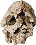
Descubierto por Justus Erus en 1999 en Lomekwi, en Kenia (Leakey et al. 2001, Lieberman 2001). La edad estimada es de aproximadamente 3,5 millones de años. Este es un cráneo mayormente completo, pero fuertemente distorsionado, con una cara grande y plana y dientes pequeños. El tamaño del cerebro es similar al de los australopitecinos.
Este fósil tiene considerables similitudes con, y es posiblemente relacionado con, el fósil habiline ER 1470.
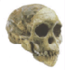
Descubierto por Raymond Dart en 1924 en Taung, en Sudáfrica (Dart 1925). El hallazgo consistió en una cara completa, dientes y mandíbulas, y un molde endocraneal del cerebro. Tiene entre 2 y 3 millones de años, pero él y la mayoría de los otros fósiles sudafricanos se encuentran en depósitos de cuevas que son difíciles de fechar. Los dientes de este cráneo indicaban que provenían de un infante de unos 5 o 6 años de edad (ahora se cree que los australopitecinos maduraban más rápido que los humanos, y que el niño de Taung tenía unos 3 años). El tamaño del cerebro era de 410 cc, y habría sido de alrededor de 440 cc como adulto. El cerebro grande y redondeado, los dientes caninos que eran pequeños y no similares a los de los simios, y la posición del foramen magnum(*) convencieron a Dart de que esto era un ancestro bípedo humano, al que nombró Australopithecus africanus (mono surafricano). Aunque el descubrimiento se hizo famoso, la interpretación de Dart fue rechazada por la comunidad científica hasta mediados de la década de 1940, tras el descubrimiento de otros fósiles similares.
{kind=link}
(*) Digresión anatómica: el foramen magno es el agujero en el cráneo por el que pasa la médula espinal. En los simios, se encuentra hacia la parte posterior del cráneo debido a su postura cuadrúpeda. En los humanos, se encuentra en la parte inferior del cráneo porque nuestra cabeza está equilibrada sobre una columna vertical. En los australopitecos también se coloca hacia adelante desde la posición de los simios, aunque no siempre tan hacia adelante como en los humanos.
TM 1512, Australopithecus africanus (fue Plesianthropus transvaalensis)
Descubierto por Robert Broom en 1936 en Sterkfontein
en Sudáfrica (Broom 1936). El segundo fósil de australopithecino encontrado,
consistía en partes de la cara, la mandíbula superior y la caja craneal.
 Sts 5, "Sra. Ples", Australopithecus africanus
Sts 5, "Sra. Ples", Australopithecus africanus
Descubierto por Robert Broom en 1947 en Sterkfontein, en Sudáfrica. Es un cráneo muy bien conservado de un adulto. Se ha pensado usualmente que es femenino, pero ha surgido recientemente una afirmación de que es masculino. Es el mejor espécimen de africanus. Tiene aproximadamente 2,5 millones de años de antigüedad, con un tamaño cerebral de unos 485 cc. (Se ha afirmado recientemente que los fósiles Sts 5 y Sts 14 (véase la siguiente entrada) pertenecían al mismo individuo)
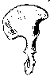
Descubierto por Robert Broom y J.T. Robinson en 1947 en Sterkfontein (Broom y Robinson 1947). La edad estimada es de aproximadamente 2,5 millones de años. Este hallazgo consistió en una columna vertebral casi completa, pelvis, algunos fragmentos de costillas y parte de un fémur de un adulto muy pequeño. La pelvis es más humana que similar a la de los simios, y es una fuerte evidencia de que africanus era bípedo (Brace et al. 1979), aunque quizás no tuviera la zancada fuerte de los humanos modernos (Burenhult 1993).
{kind=link}
BOU-VP-12/130, Australopithecus garhi
Descubierto por Yohannes Haile-Selassie en 1997 en Bouri, Etiopía (Asfaw et al.
1999). Se trata de un cráneo parcial que incluye una mandíbula superior con dientes y que tiene aproximadamente 2,5 millones de años de antigüedad.
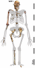
Descubierto por Lee Berger y su hijo en 2008 en Malapa, Sudáfrica (Berger et al. 2010). Es un cráneo casi completo y un esqueleto parcial de un niño de 11 a 12 años. Tiene un tamaño cerebral de 420 cc y una altura de 130 cm (4'3"), y tiene aproximadamente 1,85 millones de años. Era bípedo con brazos largos adecuados para escalar, pero tenía una serie de rasgos humanos en el cráneo, los dientes y el pelvis
Stw 573, "Little Foot",
Australopithecus
Descubierto por Ron Clarke entre 1994 y 1997 en Sterkfontein, en Sudáfrica. La edad estimada es de 3,3 millones de años. Este fósil consiste, hasta ahora, en muchos huesos del pie, la pierna, la mano y el brazo, y un cráneo completo. Se cree que más huesos aún están incrustados en la roca. (Clarke y Tobias 1995, Clarke 1998, Clarke 1999)
KNM-WT 17000, "El Cráneo Negro", Australopithecus aethiopicus
Descubierto por Alan Walker en 1985 cerca de Turkana Occidental en Kenia.
La edad estimada es de 2,5 millones de años. Este hallazgo es un cráneo intacto, casi completo. El tamaño del cerebro es muy pequeño para un homínido, aproximadamente 410 cc, y el cráneo presenta una mezcla desconcertante de características primitivas y avanzadas. (Leakey y Lewin 1992)
TM 1517, Australopithecus
robustus (era Paranthropus robustus)
Descubierto por un escolar, Gert Terblanche, en 1938 en Kromdraai
en Sudáfrica (Broom 1938). Consistía en fragmentos de cráneo,
incluyendo cinco dientes, y algunos fragmentos esqueléticos. Este fue
el primer espécimen de robustus.
SK 48, Australopithecus robustus (era Paranthropus
crassidens)
Descubierto por el Sr. Fourie en 1950 en Swartkrans, Sudáfrica
(Johanson y Edgar 1996). Es un cráneo, probablemente perteneciente a
una hembra adulta, y tiene entre 1,5 y 2,0 millones de años. Es el
cráneo más completo de robustus.
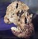
Descubierto por André Keyser en 1994 en la cueva de Drimolen en Sudáfrica. La edad estimada está entre 1.5 y 2.0 millones de años. Este es un cráneo casi completo y mandíbula inferior de una hembra, uno de los cráneos homínidos más completos jamás encontrados, y el primer fósil significativo de una hembra robustus. Se encontró un fósil de la mandíbula inferior de un macho robustus, apodado Orfeo (DNH 8), a pocos centímetros de distancia. (Keyser 2000)
{kind=link}
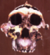
Descubierto por Mary Leakey en 1959 en el Cañón de Olduvai en Tanzania (Leakey 1959).
La edad estimada es de 1,8 millones de años. Es un cráneo casi completo, con un tamaño cerebral de aproximadamente 530 cc. Este fue el primer ejemplar de esta especie. Louis Leakey consideró brevemente que esto era un ancestro humano, pero la afirmación fue descartada cuando se encontró Homo habilis poco después.
{kind=link}
{kind=link}
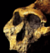
Descubierto por Richard Leakey en 1969
cerca del Lago Turkana en Kenia. Este hallazgo fue un cráneo completo e intacto
que carecía únicamente de los dientes (Lewin 1987). La edad estimada es
de aproximadamente 1,7 millones de años. El tamaño del cerebro es de aproximadamente 510 cc. (véase también ER 3733)
{kind=link}
KNM-ER 732, Australopithecus boisei
Descubierto por Richard Leakey en 1970 cerca del Lago Turkana en Kenia.
El cráneo es similar al de OH 5, pero es más pequeño y presenta
otras diferencias, como la ausencia de una cresta sagital. La
edad estimada es de aproximadamente 1,7 millones de años. El tamaño
del cerebro es de aproximadamente 500 cc. La mayoría de los expertos
consideran que se trata de un caso de dimorfismo sexual, con la hembra
más pequeña que el macho.
KGA10-525, Australopithecus boisei
Descubierto por A. Amzaye en 1993 en Konso, Etiopía (Suwa et al. 1997). Este fósil consiste en gran parte de un cráneo, incluyendo una mandíbula inferior. La edad estimada es de 1,4 millones de años. El tamaño del cerebro se estima en aproximadamente 545 cc. Aunque posee muchas características específicas de boisei, también se sitúa fuera del rango de variación previamente conocido de esa especie en muchos aspectos, sugiriendo que boisei (y quizás otras especies homínidas) pudo haber sido más variable de lo que a menudo se piensa (Delson 1997).
Homo habilis
Descubierto por los Leakey a principios de la década de 1960 en la Grieta de Olduvai en Tanzania. Se encontraron varios especímenes fragmentarios (Leakey et al. 1964).
- OH 7, "El hijo de Jonny", encontrado
por Jonathon Leakey en 1960 (Leakey 1961), consistía en una
mandíbula inferior y dos fragmentos craneales de un niño, y unos
pocos huesos de la mano. La edad estimada es de 1,8 millones de años, y el
tamaño del cerebro era de aproximadamente 680 cc.
- OH 8: encontrado en 1960,
consistía en un conjunto de huesos del pie, completos excepto por la
parte posterior del talón y los dedos. La edad estimada es de aproximadamente 1,8
millones de años. Presentan una mezcla de rasgos humanos y de mono, pero son
consistentes con la locomoción bípeda.
(Aiello y Dean 1990)
- OH 13, "Cindy": encontrado en
1963, consistía en una mandíbula inferior y dientes, fragmentos de la
mandíbula superior y un fragmento craneal. La edad estimada es de 1,6
millones de años, y el tamaño del cerebro era de aproximadamente 650 cc.
- OH 16, "George": encontrado en 1963, consistía en
dientes y algunas partes muy fragmentarias del cráneo.
(George lamentablemente fue pisoteado por ganado masai antes
de ser encontrado, y gran parte del cráneo se perdió.) La edad estimada es de 1,7 millones de años, y el tamaño del cerebro era de aproximadamente
640 cc.
{kind=link}
 OH 24, "Twiggy", Homo habilis
OH 24, "Twiggy", Homo habilis
Descubierto por Peter Nzube en 1968 en la Grieta de Olduvai en Tanzania.
Consistía en un cráneo bastante completo pero muy aplastado
y siete dientes. Tiene aproximadamente 1,85 millones de años y un
volumen cerebral de aproximadamente 590 cc.
 KNM-ER 1470, Homo habilis (o Homo rudolfensis?)
KNM-ER 1470, Homo habilis (o Homo rudolfensis?)
Descubierto por Bernard Ngeneo en 1972 en Koobi Fora, Kenia
(Leakey 1973). La edad estimada es de 1,9 millones de años. Este es
el cráneo de habilis más completo conocido. Su tamaño cerebral es de 750
cc, grande para habilis. Originalmente se dató en casi 3 millones de años, una cifra que causó mucha confusión ya que en ese momento era más antigua que cualquier australopithecino conocido, de los cuales habilis
había descendido supuestamente. Surgió un debate animado sobre la datación de 1470
(Lewin 1987; Johanson y Edey 1981; Lubenow 1992). El
cráneo es sorprendentemente moderno en algunos aspectos. La caja craneal es
mucho más grande y menos robusta que cualquier cráneo de australopithecino, y
también carece de las grandes arcos superciliares típicas de Homo erectus.
Sin embargo, es muy grande y robusto en la cara. Se encontraron varios huesos de pierna
dentro de unos pocos kilómetros, y se cree que probablemente pertenecen a la misma especie. El más completo, KNM-ER
1481, consistía en un fémur izquierdo completo, ambos extremos de una tibia izquierda y el extremo inferior de una fibula izquierda (el hueso de la pierna inferior más pequeño de los dos). Estos son bastante similares a los huesos de los humanos modernos. (Argumentos creacionistas)
KNM-ER 1805, "El Cráneo Misterioso", Homo habilis??
Descubierto por Paul Abell en 1973 en Koobi Fora, Kenia (Leakey 1974). La edad estimada es de 1,85 millones de años. Este hallazgo consistió en gran parte de un cráneo robusto que contenía muchos dientes. Su tamaño cerebral es de aproximadamente 600 cc. Algunas características, como la cresta sagital, son típicas de A. boisei, pero los dientes son demasiado pequeños para esa especie. (Willis 1989; Day 1986) Varios investigadores lo han asignado a casi todas las especies concebibles, pero muchos estudios lo han atribuido a Homo habilis (por ejemplo, Wood 1991). Un estudio cladístico reciente lo ha colocado fuera de Homo y más similar a los australopitecos robustos, aunque diferente de cualquier especie nombrada. (Prat 2002)
 KNM-ER 1813, Homo habilis
KNM-ER 1813, Homo habilis
Descubierto por Kamoya Kimeu en 1973 en Koobi Fora, Kenia (Leakey 1974). La edad estimada es de 1,8 a 1,9 millones de años. El tamaño del cerebro es de 510 cc, lo cual es muy pequeño para habilis, pero el fósil es un espécimen adulto, probablemente de una hembra. Aparte de su tamaño extremadamente pequeño, ER 1813 es sorprendentemente moderno, con un cráneo redondeado, sin cresta sagital, arcos superciliares modestos y una pequeña prominencia nasal.
 Stw 53, Homo habilis?
Stw 53, Homo habilis?
Descubierto por Alun Hughes en 1976 en Sterkfontein, Sudáfrica
(Hughes y Tobias 1977). La edad estimada es de 1,5 a 2 millones
de años. Consistía en varios fragmentos de cráneo, incluidos
dientes. Se encontraron muchas herramientas de piedra en la misma capa.
OH 62, "hominino de dik-dik", Homo habilis
Descubierto por Tim White en 1986 en la Grieta de Olduvai en Tanzania (Johanson y Shreeve 1989; Johanson et al. 1987). La edad estimada es de 1,8 millones de años. El hallazgo consistió en porciones de cráneo, huesos de brazo, pierna y dientes. Casi todas las características del cráneo se asemejan estrechamente a los fósiles de habilis como OH 24, ER 1813 y ER 1470, en lugar de a los australopitecinos. Pero la altura estimada es muy pequeña, quizás alrededor de 105 cm (3'5"), y los brazos son muy largos en proporción a las piernas. Estas son características de los australopitecinos, y de hecho los huesos esqueléticos son muy similares a los de Lucy. Este hallazgo es significativo porque es el único fósil en el que los huesos de las extremidades han sido asignados de manera segura a habilis. Debido al tamaño pequeño, esto fue casi con certeza una hembra. Al igual que con los australopitecinos, los machos habrían sido considerablemente más grandes.
 OH 65, Homo habilis
OH 65, Homo habilis
Descubierto en 1995 en la garganta de Olduvai en Tanzania. Este fósil consistía en una mandíbula superior completa y parte de la cara inferior, datado en 1,8 millones de años. Debido a sus similitudes con el fósil ER 1470, sus descubridores han sugerido que OH 65 podría llevar a una reclasificación de los fósiles habiline. (Blumenschine et al. 2003, Tobias 2003)
 Trinil 2, "Hombre de Java", "Pithecanthropus I", Homo
erectus (era Pithecanthropus erectus)
Trinil 2, "Hombre de Java", "Pithecanthropus I", Homo
erectus (era Pithecanthropus erectus)
Descubierto por Eugene Dubois en 1891
cerca de Trinil en la isla indonesia de Java. Su edad es
incierta, pero se cree que es de aproximadamente 700.000 años. Este hallazgo
consistió en una calota craneal plana y muy gruesa, y algunos dientes (que podrían
pertenecer a orangutanes). El año siguiente se encontró un fémur
a unos 12 metros de distancia (Theunissen 1989). El tamaño del cerebro es de aproximadamente
940 cc. El fémur es completamente moderno, y muchos científicos ahora creen
que pertenece a un humano moderno.
(Argumentos creacionistas)
 "Hombre de Pekín", Homo
erectus (era Sinanthropus pekinensis)
"Hombre de Pekín", Homo
erectus (era Sinanthropus pekinensis)
Entre 1929 y 1937, se descubrieron 14 cráneos parciales, 11 mandíbulas inferiores, muchos
dientes, algunos huesos esqueléticos y grandes cantidades de herramientas de piedra en la Cueva Baja en el Lugar 1 del sitio del Hombre de Pekín en Zhoukoudian (anteriormente Choukoutien), cerca de Beijing (anteriormente
Pekín), en China. Su edad se estima que está entre 500.000
y 300.000 años. (También se descubrieron varios fósiles de humanos modernos en la Cueva Alta en el mismo sitio en 1933.) Los
fósiles más completos, todos los cuales eran cajas craneales o calaveras, son:
- Cráneo III, descubierto en el Locus E en 1929, es un adolescente o juvenil con un tamaño cerebral de 915 cc.
- Cráneo II, descubierto en el Locus D en 1929 pero solo reconocido en 1930, es un adulto o adolescente con un tamaño cerebral de 1030 cc.
- Los cráneos X, XI y XII (a veces llamados LI, LII y LIII) fueron descubiertos en el Locus L en 1936. Se cree que pertenecen a un hombre adulto, una mujer adulta y un adulto joven, con tamaños cerebrales de 1225 cc, 1015 cc y 1030 cc, respectivamente. (Weidenreich 1937)
- Cráneo V: dos fragmentos craneales fueron descubiertos en 1966 que encajan con (moldeos de) otros dos fragmentos encontrados en 1934 y 1936 para formar gran parte de una calota craneal con un tamaño cerebral de 1140 cc. Estas piezas fueron encontradas a un nivel superior y parecen ser más modernas que las otras calotas craneales. (Jia y Huang 1990) (Argumentos creacionistas)
La mayoría de los estudios sobre estos fósiles fueron realizados por Davidson Black hasta su muerte en 1934. Franz Weidenreich lo reemplazó y estudió los fósiles hasta dejar China en 1941. Los fósiles originales desaparecieron en 1941 mientras eran transportados a los Estados Unidos para su seguridad durante la Segunda Guerra Mundial, pero existen excelentes réplicas y descripciones que permanecen. Desde la guerra, se han encontrado otros fósiles de erectus en este sitio y en otros lugares de China.
{kind=link}
Sangiran 2,
"Pithecanthropus II", Homo erectus
Descubierto por G.H.R. von Koenigswald en 1937 en Sangiran, en la
isla indonesia de Java. Este fósil es un cráneo que es
muy similar al primer capuchón craneal del Hombre de Java, pero
más completo y más pequeño, con un tamaño cerebral de solo
aproximadamente 815 cc.
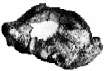
Descubierto por Louis Leakey en 1960 en
el Cañón de Olduvai en Tanzania (Leakey 1961). La edad estimada es de 1,5
millones de años. Consistía en un cráneo parcial con grandes arcos superciliares
y un tamaño cerebral de 1065 cc.
{kind=link}
OH 12, "Pinhead", Homo erectus
Descubierto por Margaret Cropper en 1962 en el Cañón de Olduvai en Tanzania. Es similar a, pero menos completo que el OH 9, y más pequeño, con un tamaño cerebral estimado de solo 750 cc. Se estima que tiene entre 800.000 y 1.200.000 años de antigüedad. Anton (2004) ha encontrado algunas piezas más de este cráneo, pero sigue siendo muy fragmentario.
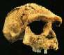
Descubierto por Sastrohamidjojo Sartono en 1969 en Sangiran, en Java. Este consiste en un cráneo bastante completo, con un tamaño cerebral de aproximadamente 1000 cc. Es el fósil de erectus más completo de Java. Este cráneo es muy robusto, con una cara ligeramente proyectada y pómulos enormes y salientes. Se ha pensado que tiene unos 800.000 años, pero una datación reciente ha dado una cifra mucho más antigua de casi 1,7 millones de años. Si la fecha más antigua es correcta, significa que Homo erectus migró fuera de África mucho antes de lo que se pensaba.
{kind=link}
 KNM-ER 3733, Homo erectus (o Homo ergaster)
KNM-ER 3733, Homo erectus (o Homo ergaster)
Descubierto por Bernard Ngeneo en 1975 en Koobi Fora, Kenia.
La edad estimada es de 1,7 millones de años. Este hallazgo excepcional consistió en
un cráneo casi completo. El tamaño del cerebro es de aproximadamente 850 cc, y
el cráneo completo es similar a los fósiles del Hombre de Pekín. El
descubrimiento de este fósil en la misma capa estratigráfica que ER 406 (A. boisei)
dio el golpe de gracia a la hipótesis de una sola especie: la
idea de que nunca ha habido más de una especie de homínido en
ningún punto de la historia. (Leakey y Walker 1976)
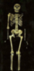
Descubierto por Kamoya Kimeu en 1984 en Nariokotome, cerca del Lago Turkana en Kenia (Brown et al. 1985; Leakey y Lewin 1992;
Walker y Leakey 1993; Walker y Shipman 1996). Este es un
esqueleto casi completo de un niño de 11 o 12 años, siendo las únicas
omisiones importantes las manos y los pies. (Algunos científicos
creen que erectus maduró más rápido que los humanos modernos, y
que realmente tenía unos 9 años (Leakey y Lewin 1992).) Es el
especimen más completo conocido de erectus, y también uno de los
más antiguos, con 1,6 millones de años. El tamaño del cerebro fue de 880
cc, y se estima que habría sido de 910 cc en la
edad adulta. El niño tenía 160 cm (5'3") de altura, y habría
tenido unos 185 cm (6'1") como adulto. Esta es una altura
sorprendentemente alta, indicando que muchos erectus pudieron haber sido tan grandes
como los humanos modernos. Excepto por el cráneo, el esqueleto es muy
similar al de los niños modernos, aunque hay una serie de
pequeñas diferencias. La más notable es que los agujeros
en sus vértebras, por donde pasa la médula espinal, tienen solo aproximadamente
la mitad del área transversal encontrada en los humanos modernos.
Una explicación sugerida para esto es que el niño carecía del control motor fino que tenemos en el tórax para controlar el habla, implicando que no era tan fluido hablando como los humanos modernos (Walker y Shipman 1996).
 D2700, Homo georgicus
D2700, Homo georgicus
Descubierto en 2001 en Dmanisi, en Georgia. La edad estimada es de 1,8 millones de años. Se trataba de un cráneo mayormente completo, que incluía una mandíbula inferior (D2735) perteneciente al mismo individuo. (Vekua et al. 2002, Balter y Gibbons 2002)
Con un volumen de aproximadamente 600 cc, este es el cráneo de homínido más pequeño y primitivo jamás descubierto fuera de África.
Este cráneo y otros dos descubiertos cerca forman una transición casi perfecta entre H. habilis y ergaster.
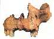
Descubierto en Atapuerca, en España. Se trata de una parte del rostro de un niño
que probablemente tenía entre 10 y 11,5 años. Este fósil tiene más de
780.000 años de antigüedad. (Bermudez de Castro et al. 1997)
{kind=link}
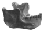
Descubierto por trabajadores de una cantera de grava en 1907 cerca de Heidelberg en Alemania. La edad estimada está entre 400.000 y 700.000 años. Este hallazgo consistió en una mandíbula inferior con mentón retraído y todos sus dientes. La mandíbula es extremadamente grande y robusta, como la de Homo erectus, pero los dientes están en el extremo pequeño del rango de erectus. A menudo se clasifica como Homo heidelbergensis, pero también ha sido considerado a veces como un Homo erectus europeo.
 "Hombre de Rodésia", "Kabwe", Homo sapiens (arcaico) (era Homo rhodesiensis)
"Hombre de Rodésia", "Kabwe", Homo sapiens (arcaico) (era Homo rhodesiensis)
Descubierto por un trabajador en 1921 en Broken Hill, en la Rodésia del Norte (ahora Kabwe en Zambia) (Woodward 1921). Este era un cráneo completo muy robusto, con grandes arcos superciliares y una frente recedida. La edad estimada está entre 200.000 y 125.000 años. El tamaño del cerebro era de aproximadamente 1280 cc. (Argumentos creacionistas)
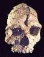
Descubierto en Arago, en el sur de Francia, en 1971 por Henry de Lumley.
La edad estimada es de 400.000 años. El fósil consiste en una cara bastante completa, con 5 dientes molares y parte de la caja craneal. El tamaño del cerebro era de aproximadamente 1150 cc. El cráneo contiene una mezcla de características del arcaico Homo sapiens y Homo erectus, al cual a veces se asigna.
{kind=link}
 Petralona 1, Homo sapiens (arcaico)
Petralona 1, Homo sapiens (arcaico)
Descubierto por aldeanos en Petralona, Grecia, en 1960. La edad estimada es de 250.000-500.000 años. Podría considerarse alternativamente un Homo erectus tardío y también presenta algunas características neandertales. El tamaño del cerebro es de 1220 cc, alto para erectus pero bajo para sapiens, y la cara es grande con mandíbulas particularmente anchas. (Day 1986)
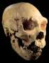
Descubierto en la Sima de los Huesos ("Pozo de los Huesos") en el yacimiento de cueva de Atapuerca, en el norte de España, en 1992 y 1993 por Juan-Luis Arsuaga. Tiene aproximadamente 300.000 años de antigüedad y un tamaño cerebral de 1125 cc. El rostro es ancho con una enorme abertura nasal, y se asemeja a los neandertales en algunos rasgos pero no en otros. Este es el cráneo premoderno más completo en todo el registro fósil homínido. (Arsuaga et al. 1993; Johanson y Edgar 1996)
{kind=link}
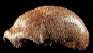
Descubierto por Johann Fuhlrott en 1856 en una pequeña cueva en Feldhofer, en el Valle del Neandertal en Alemania. El hallazgo consistió en una calota craneal, huesos de fémur, parte de un pelvis, algunas costillas y algunos huesos de brazo y hombro. El brazo izquierdo inferior había sido roto en vida, y como resultado, los huesos del brazo izquierdo eran más pequeños que los del derecho. Fuhlrott lo reconoció como un humano primitivo, pero el establishment alemán encabezado por Rudolf Virchow rechazó esta visión, afirmando incorrectamente que se trataba de un humano moderno patológico. (Trinkaus y Shipman 1992) En 1999, el sitio original fue redescubierto, y se recuperaron más huesos del mismo espécimen. (Argumentos creacionistas)
{kind=link}
(En realidad hubo dos hallazgos neandertales anteriores. Un cráneo parcial de un niño de 2,5 años encontrado en 1829 en Bélgica no fue reconocido hasta 1936. Un cráneo adulto encontrado en Gibraltar en 1848 permaneció en un museo hasta que fue reconocido como neandertal en 1864.)
"Espía 1 y 2", Homo sapiens neanderthalensis
Descubiertos por Marcel de Puydt y Max Lohest en 1886 en la Gruta de Espía (pronunciada Spee) d'Orneau en Bélgica. La edad estimada es de aproximadamente 60.000 años. Este hallazgo consistió en dos esqueletos casi completos. Las excelentes descripciones de los esqueletos establecieron que eran muy antiguos y desacreditaron en gran medida la idea de que la fisonomía neandertal era una condición patológica, pero también concluyeron erróneamente que el Hombre Neandertal caminaba con las rodillas dobladas.
"Sitio de Krapina", Homo sapiens neanderthalensis
Descubierto por Dragutin Gorjanovic-Kramberger en 1899 cerca de Krapina en Croacia. Este sitio proporcionó restos significativos de dos a tres docenas de individuos, además de fragmentos de dientes y mandíbulas de docenas más. Cuando Gorjanovic publicó sobre sus hallazgos en 1906, confirmó por una vez y para siempre que los neandertales no eran humanos modernos patológicos.
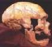
Descubierto por Amedee y Jean Bouyssonie en 1908 cerca de
La-Chapelle-aux-Saints en Francia. Tiene aproximadamente 50.000 años de antigüedad,
con un tamaño cerebral de 1620 cc. Este esqueleto casi completo fue
reconstruido por Marcellin Boule, quien
escribió un artículo definitivo y altamente influyente sobre él que
logró ser totalmente incorrecto en muchas de sus conclusiones. Exageró las características similares a las de un mono del
fósil, popularizando el estereotipo, que duraría durante
décadas, de un mono-hombre encorvado moviéndose tambaleante con las rodillas dobladas.
Este espécimen tenía entre aproximadamente 30 y 40 años cuando murió, pero tenía
una costilla rota curada, artritis severa de la cadera, cuello inferior, espalda
y hombros, y había perdido la mayoría de sus dientes molares. El hecho
de que sobreviviera tanto tiempo indica que los neandertales
deben haber tenido una estructura social compleja.
{kind=link}
{kind=link}
"Sitio de Shanidar", Homo sapiens neanderthalensis
Ralph Solecki descubrió 9 esqueletos de neandertales entre 1953 y 1960 en la cueva de Shanidar, en Irak. Se cree que tienen entre 70.000 y 40.000 años de antigüedad. Uno de ellos, Shanidar 4, aparentemente fue enterrado con ofrendas de flores (aunque esta interpretación ha sido cuestionada). En 1971, Solecki escribió un libro, "Shanidar, los Primeros Pueblos de las Flores", desmintiendo los estereotipos anteriores de brutos semihumanos. Otro esqueleto, Shanidar 1, era parcialmente ciego, de un solo brazo y cojo. Su supervivencia también es evidencia de una estructura social compleja.
{kind=link}
"Saint-Cesaire Neandertal", Homo sapiens neanderthalensis
Descubierto por Francois Leveque en 1979 cerca del pueblo de Saint-Cesaire en Francia. Consistía en un esqueleto muy aplastado. El cráneo estaba mayormente completo, con falta solo la parte posterior del cráneo. Se data en aproximadamente 35.000 años y es uno de los Neandertales más recientes conocidos. Este hallazgo fue de especial interés porque se encontró junto a herramientas que previamente se asumía pertenecían a la cultura Cro-Magnon, en lugar del habitual kit de herramientas de los Neandertales.
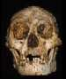
Descubierto por un equipo australio-indonesio en 2003 en la cueva de Liang Bua, en la isla indonesia de Flores.
Este hallazgo consistió en un cráneo casi completo y un esqueleto parcial compuesto por huesos de las piernas, partes del pelvis, manos y pies, y algunos otros fragmentos. LB1 era un adulto, probablemente femenino, con una altura de aproximadamente 1 metro (3'3") y un tamaño cerebral extremadamente pequeño de 417cc. El cráneo tiene dientes similares a los humanos, con una frente recedida y sin mentón. El fósil tiene 18.000 años y fue encontrado junto con herramientas de piedra. Se cree que esta especie es una forma enana de Homo erectus. (Brown et al. 2004, Morwood et al. 2004, Lahr y Foley 2004)
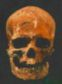
Descubierto por trabajadores en 1868 en Cro-Magnon, Francia. La edad estimada es de 30,000 años. El sitio produjo esqueletos de 5 individuos enterrados, junto con herramientas de piedra, cuernos de reno tallados, colgantes de marfil y conchas. Los Cro-Magnon vivieron en Europa entre hace 35,000 y 10,000 años. Son virtualmente idénticos al hombre moderno, siendo altos y musculosos y ligeramente más robustos que la mayoría de los humanos modernos. Eran hábiles cazadores, fabricantes de herramientas y artistas famosos por el arte rupestre en lugares como Lascaux, Chauvet,
y Altamira.
Resumen
Existen numerosas tendencias claras (que no fueron ni continuas ni uniformes) desde los primeros australopitecos hasta los humanos recientes: aumento del tamaño cerebral, aumento del tamaño corporal, mayor uso y sofisticación en herramientas, disminución del tamaño dental y disminución de la robustez esquelética. No existen líneas divisorias claras entre algunos de los australopitecos gráciles posteriores y algunos de los primeros Homo, entre erectus y sapiens arcaico, o entre sapiens arcaico y sapiens moderno.
| El creacionista Wayne Jackson cita el párrafo de la izquierda en un artículo en línea. Lee mi respuesta aquí. |
A pesar de esto, hay poco consenso sobre cuál es nuestro árbol genealógico. Todos aceptan que los robustos australopitecos (aethiopicus, robustus y boisei) no son ancestros nuestros, siendo un rama lateral que no dejó descendientes. Si H. habilis desciende de A. afarensis, africanus, ambos, o ninguno de ellos, sigue siendo objeto de debate. Es posible que ninguno de los australopitecos conocidos sea nuestro ancestro.
Se han descubierto varios nuevos géneros y especies en la última década (Ar. ramidus, Au. amanensis, Au. bahrelghazali, Au. garhi, Orrorin, Kenyanthropus, Sahelanthropus) y aún no se ha formado un consenso sobre cómo están relacionados entre sí o con los humanos. Generalmente se acepta que Homo erectus descendió de Homo habilis (o, al menos, algunos de los fósiles a menudo asignados a habilis), pero la relación entre erectus, sapiens y los neandertales sigue siendo poco clara. Las afinidades neandertales pueden detectarse en algunos especímenes tanto de sapiens arcaicos como modernos.
Esta página es parte del FAQ sobre Fósiles de Hominidos en el Archivo talk.origins.
Página de inicio |
Especies |
Fósiles |
Creacionismo |
Lectura |
Referencias
Ilustraciones |
Novedades |
Comentarios |
Búsqueda |
Enlaces |
Ficción
http://www.talkorigins.org/faqs/homs/specimen.html, 22 de mayo de 2011
Derechos de autor © Jim Foley
|| Envíame un correo electrónico